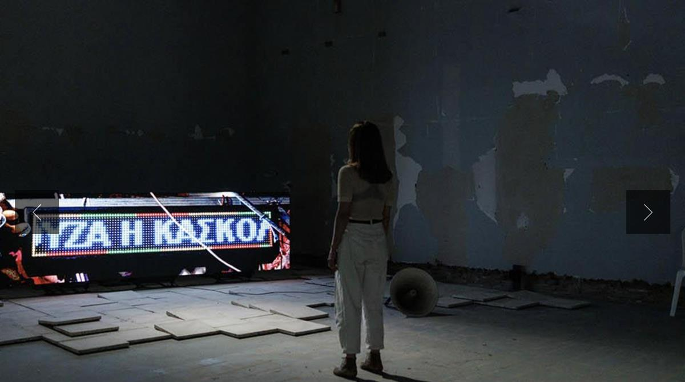
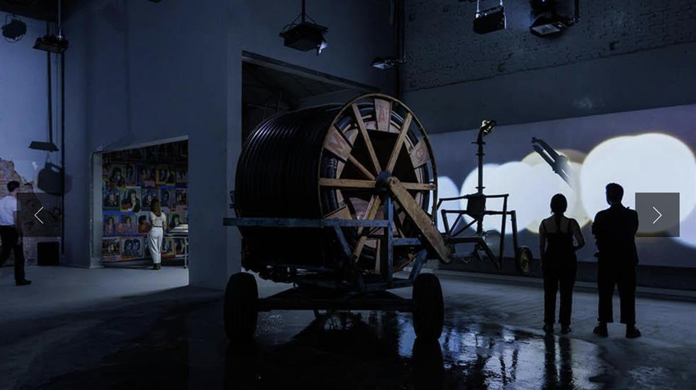

ON SOURCE: LA BIENNALE DI VENEZIA
Greece
Ξηρόμερο / Dryland
Xirómero/Drylandis a hybrid audio- visual installation that is the result of a collective artistic endeavour. The project’s creative team consists of artists and theorists while the work showcased comprises fragments of research, performances, sounds sequences and video installations.
Using water as its focal point, Xirómero/Dryland explores the political potential of sound and music as well as the impact of technology on rural landscapes and cultural diversity.
The artists explore the experience of a provincial fair, following its course and movements from the village square all the way out to the land. The work draws from the local traditions of Central Greece and of the Xirómero region, which also lends the project its title.
Gender relations as well as the incessant interplay between performance and reality punctuating the rhythm of these fairs take centre stage in the Greek pavilion, which is transformed by bringing the community’s meeting space — the square, the public assembly — from the outdoors to the indoors.
Xirómero/Dryland aims to relate the experience of local customs to the global condition where aesthetic directions change, traditions shift, rural life and celebration take on different forms, whilst the political dimensions of these processes remain an open subject of inquiry.

Commissioner: EΜΣΤ | Νational Museum of Contemporary Art, Athens; Katerina Gregos, artistic director
Curator: Panos Giannikopoulos
Exhibitors: Kostas Chaikalis, Thanasis Deligiannis, Elia Kalogianni, Yorgos Kyvernitis, Yannis Michalopoulos, Fotis Sagonas
Venue:Giardini

- TUE - SUN
20/04 > 30/09
11 AM - 7 PM
01/10 > 24/11
10 AM - 6 PM - Giardini
- Admission with ticket
ON SOURCE: LA BIENNALE DI VENEZIA